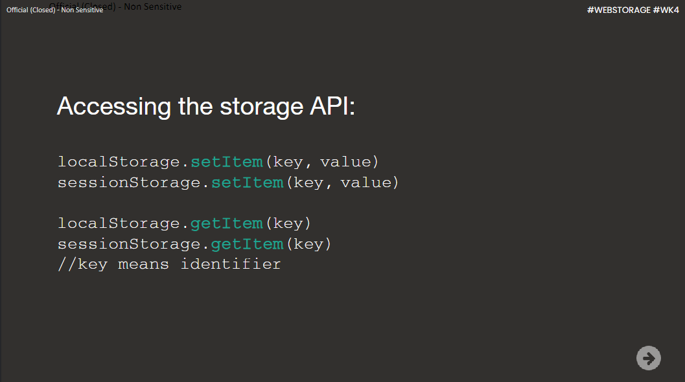

Stuff I learnt in Week 7.
Understanding the DOM and Storage in Web Development and also handling events and validation
In Week 7, I learned about the Document Object Model (DOM) , Types of storages and also how to handle events and validation
The Document Object Model (DOM)
The DOM is a programming interface for HTML and XML documents. It represents the structure of a web page as a tree-like structure, where each element in the HTML document is represented as a node in the tree. This allows us to manipulate and interact with the elements on a web page dynamically using JavaScript.

Session Storage
Session storage is a type of web storage that allows data to be stored and accessed during a single browsing session. It provides a way to store key-value pairs in the user's browser, which can be useful for temporarily storing data that needs to persist across multiple pages within the same session. The data stored in session storage is cleared when the session ends, either by closing the browser or navigating away from the website.
Local Storage
Local storage is another type of web storage that allows data to be stored and accessed across multiple browsing sessions. It provides a way to store larger amounts of data compared to session storage, and the data stored in local storage remains available even after closing the browser or restarting the computer. Local storage is commonly used for caching data, storing user preferences, or implementing offline functionality in web applications.
Example of how to set and get
Handling Events and Validation
In addition to understanding the DOM and different storage options, I also learned about handling events and validation in web development. Events are actions or occurrences that happen in the browser, such as a button click or a form submission. JavaScript can be used to listen for these events and perform certain actions in response. Validation, on the other hand, involves checking user input to ensure it meets certain criteria, such as validating an email address or a password. By implementing event handling and validation techniques, I can create more interactive and user-friendly web applications.
By understanding the DOM, different storage options, event handling, and validation in web development, I now have the knowledge to create dynamic and interactive web pages that can store and retrieve data efficiently.